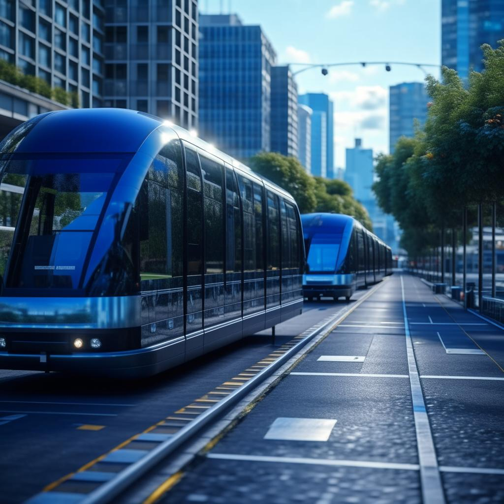
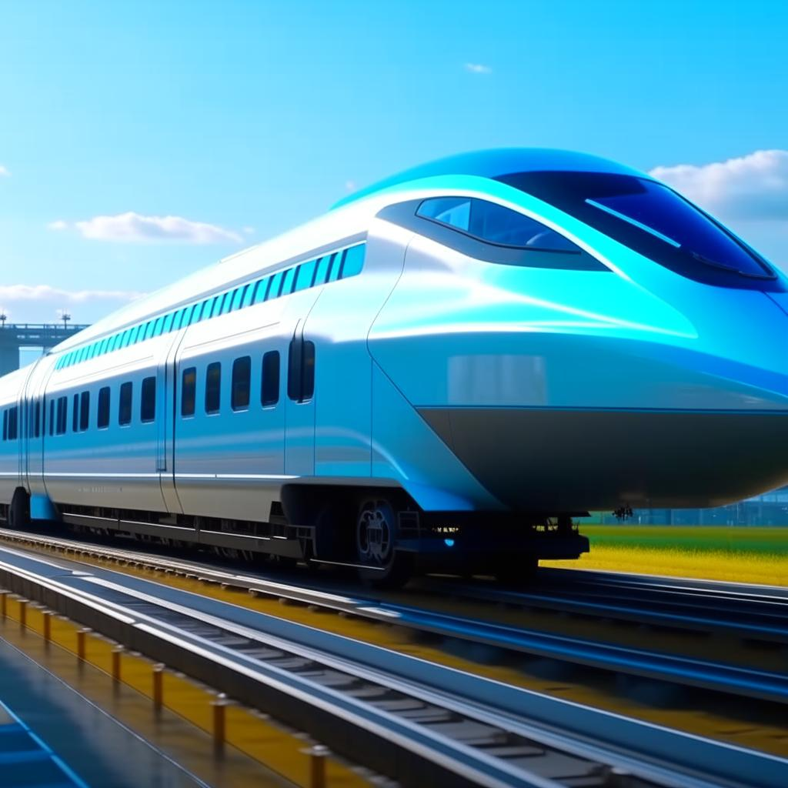

Транспорт является одной из ключевых отраслей нашей современной жизни. Он обеспечивает передвижение людей и грузов, связывая различные уголки мира и способствуя развитию экономики. В последние годы в сфере транспорта происходят значительные изменения, связанные с развитием новых технологий и стремительным прогрессом в области автоматизации. Давайте рассмотрим некоторые из самых интересных новостей и тенденций в мире транспорта.
Транспорт является одной из ключевых отраслей нашей современной жизни. Он обеспечивает передвижение людей и грузов, связывая различные уголки мира и способствуя развитию экономики. В последние годы в сфере транспорта происходят значительные изменения, связанные с развитием новых технологий и стремительным прогрессом в области автоматизации. Давайте рассмотрим некоторые из самых интересных новостей и тенденций в мире транспорта.
Одной из самых обсуждаемых тем в последнее время является электрическая мобильность. Электромобили становятся все более популярными, и многие страны уже объявили о планах полностью перейти на электрический транспорт к определенному сроку. Например, Норвегия намерена запретить продажу автомобилей с двигателями внутреннего сгорания к 2025 году. Также ведущие автопроизводители активно разрабатывают свои электромобильные модели, предлагая потребителям все больше вариантов.
Еще одной интересной новостью является развитие автономных транспортных средств. Технологии искусственного интеллекта и автоматизации позволяют создавать автомобили, способные самостоятельно перемещаться по дорогам без участия водителя. Крупные компании, такие как Tesla, Google и Uber, активно работают над созданием и усовершенствованием своих автономных автомобилей. Однако, помимо технических проблем, существуют и правовые и этические вопросы, которые требуют решения перед массовым внедрением таких транспортных средств.
{kind=link}
Еще одной актуальной темой в мире транспорта является развитие грузовых дронов. Беспилотные летательные аппараты могут значительно упростить и ускорить доставку грузов, особенно в труднодоступные или отдаленные районы. Например, компания Amazon уже проводит эксперименты с доставкой товаров с помощью дронов. Однако, здесь также возникают проблемы безопасности и регулирования, которые необходимо решить перед широким использованием грузовых дронов.
Также стоит отметить развитие высокоскоростных поездов, таких как маглев-поезда. Эти поезда, движущиеся на магнитной подушке, способны развивать скорость до 600 километров в час, что делает их наиболее быстрыми средствами транспорта на сегодняшний день. Такие поезда уже эксплуатируются в некоторых странах, например в Японии и Китае. Однако, высокая стоимость строительства инфраструктуры и отсутствие единого стандарта для маглев-технологий являются главными препятствиями для их широкого распространения.
{kind=link}
Наконец, стоит упомянуть о развитии сетей общественного транспорта, особенно в крупных городах. Все больше городов внедряют инновационные системы управления транспортом, такие как интеллектуальные светофоры и системы контроля движения. Это позволяет снизить пробки и улучшить общую доступность общественного транспорта.
Таким образом, мир транспорта продолжает развиваться и претерпевать значительные изменения. Электрическая мобильность, автономные транспортные средства, грузовые дроны, высокоскоростные поезда и инновационные системы управления транспортом – все это открывает новые возможности и вызывает новые вызовы для индустрии транспорта. Будущее транспорта, безусловно, будет интересным и захватывающим.
Статья была выпущена